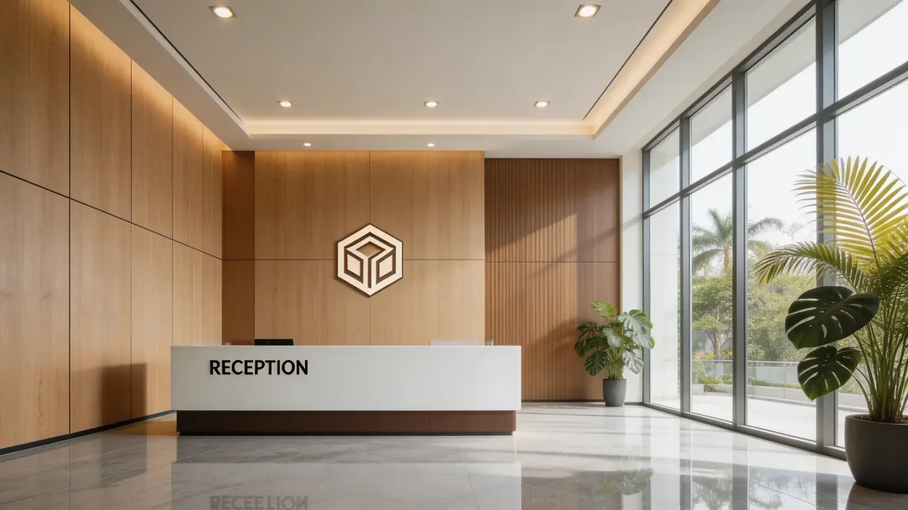

How long do PVC wall panels last?
Search results often offer a single lifespan for “PVC wall panels.” That number is not a reliable specification. A lightly used bedroom wall, a sunlit shopfront and a busy hotel corridor can age differently even with panels from the same product family. The useful buyer question is which failure mode matters for the proposed room.

There is no defensible universal lifespan for all PVC wall panels. Ask for the exact product’s written warranty and relevant performance evidence, then review light, temperature, impacts, cleaning and installation as separate service-life risks.
Identify likely reasons for replacement
Decorative panels may be replaced because the face fades, a joint opens, the substrate becomes damp, an impact damages a rib or the design changes—not because the PVC itself reaches a fixed birthday. Record the expected traffic and cleaning intensity, direct sun, moisture and maintenance access. This makes a supplier’s durability claim testable against a real application.
Read evidence without inventing years
Laboratory weathering methods such as those in the ISO 4892 series expose plastic samples under controlled conditions. They can compare changes in color, gloss or mechanical properties when the test report states cycle, duration and specimen. They do not automatically translate into ten or twenty years in a particular city. Ask for measured results on the current face film and color, not simply a “UV tested” icon.
Control what the project can control
Correct substrate, fixing, movement allowance and approved cleaning can prevent avoidable failures. Protect the wall during construction and keep spare labelled panels for large installations. A distributor should also ask whether the supplier can repeat the color and profile across future batches. A long warranty headline is less useful if its exclusions, claim process or replacement availability are unclear.
Illustrative buyer situation
A buyer compares a shaded bedroom installation with a west-facing shop window and asks for one expected lifespan. The two walls receive different light, heat and cleaning exposure. Instead of accepting a universal number of years, the buyer can request the exact product warranty, check the face-film weathering report and put a sample in the actual shop lighting. The decision can then distinguish foreseeable cosmetic change from defects covered by the contract.
Buyer checklist before ordering
- Room exposure and maintenance schedule
- Exact SKU warranty terms and exclusions
- Relevant test specimens and measured changes
- Replacement-stock and batch-color plan
Save the approved sample, product code and document references with the purchase order. A catalog helps shortlist a finish but does not establish the final specification, local acceptance, price or delivery terms.
Common buyer questions
Is there a standard PVC wall panel lifespan?
No. Service life varies with product construction, exposure, installation and care.
Does a UV test prove ten years of use?
No. The report shows performance under defined laboratory exposure, not a universal calendar-life guarantee.
What should a distributor ask?
Ask which failure modes are covered, what evidence supports the claim and how matching replacements will be supplied.
Compare the range and request the exact specification
Browse the relevant product catalog (PDF, English), then tell Luvie the destination market, room or project use, approximate quantity and the finish you want to sample. We can discuss which current SKU and documents are available; do not assume a catalog image establishes certification or a guaranteed lead time.
Turn the question into a verifiable product brief.
Send the application and target market so the conversation starts with a specific product, sample and evidence request.
Ask Luvie about this use